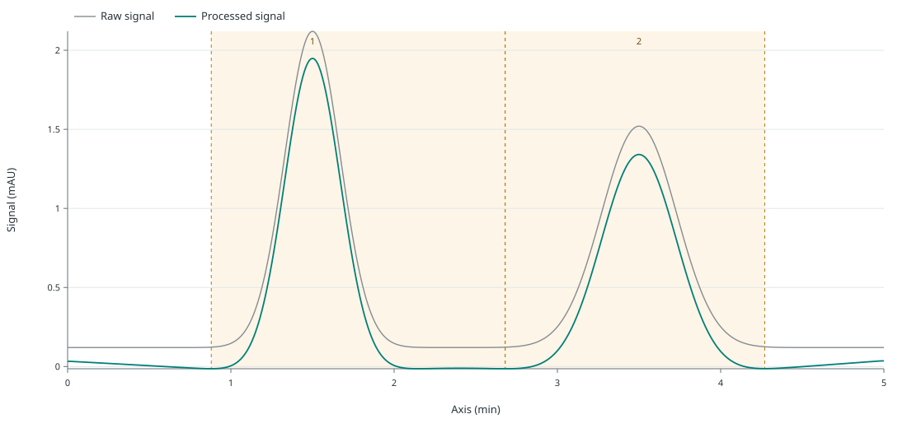
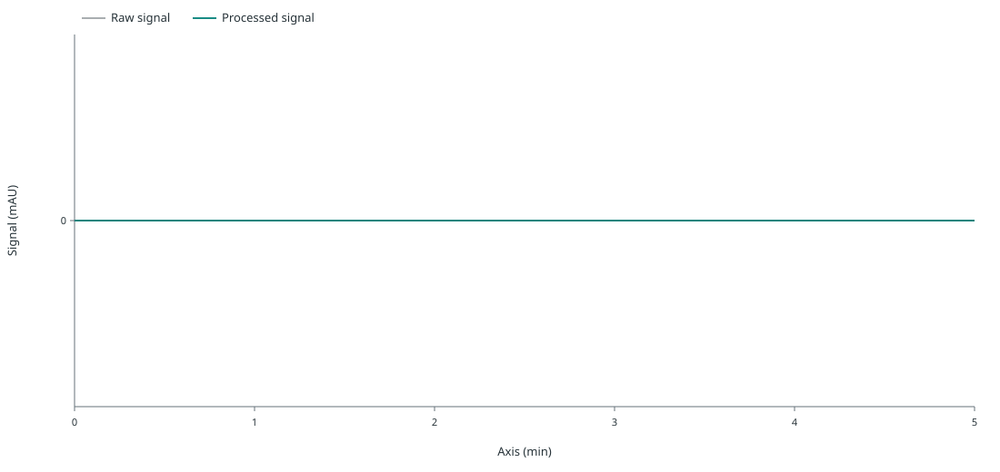
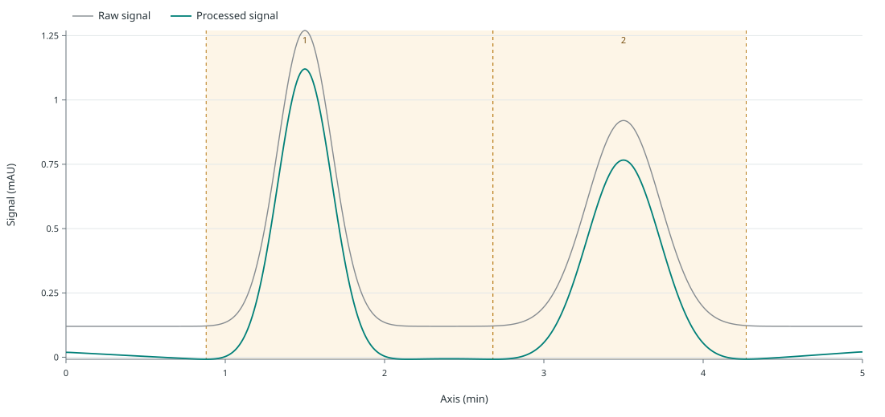
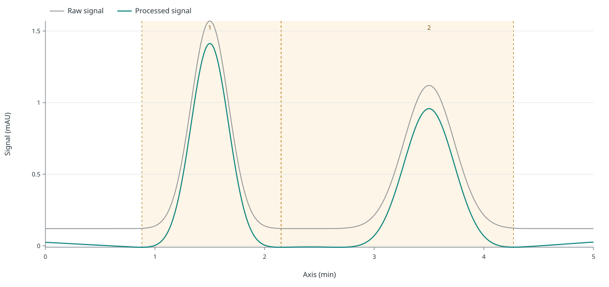

REFERENCE
Completed
501 samples · 2 peak rows
Analysis 9af15e67-7c5b-4c52-813c-cec40833615e
Four synthetic UV traces, one declared method and a durable record of success, failure, cancellation and selected retry across local MCP process restarts.
Reference and blank complete. Their analysis IDs remain fixed through every restart.
An unavailable R executable fails the QC attempt; R runtime stays unknown. The pending unknown item is cancelled.
QC and unknown complete after explicit retry. Original run receipts replay with R unavailable; the original failure remains failed and cancellation remains in history.

501 samples · 2 peak rows
Analysis 9af15e67-7c5b-4c52-813c-cec40833615e

501 samples · 0 peak rows
Analysis a69adc08-1ca1-457e-a5ed-41b45a8d4103

501 samples · 2 peak rows
Analysis fdd3e18a-2371-4e0e-bdab-cc0b528d1c07

501 samples · 2 peak rows
Analysis 8e677c52-057a-4329-a05d-2fb60803a0fd
Full transitions, bounded public reads and artifact hashes: workflow_receipt.json.